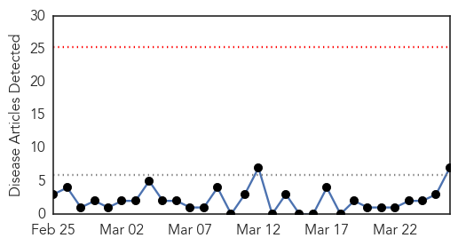
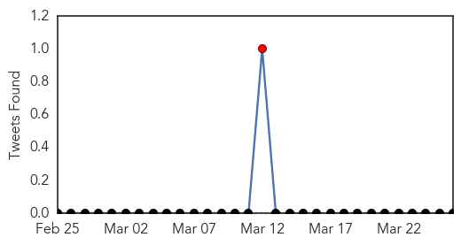
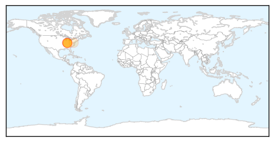
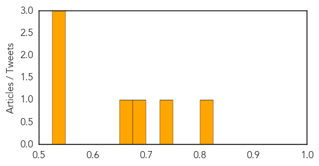
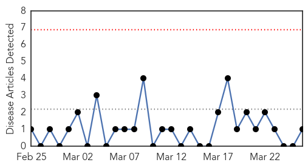
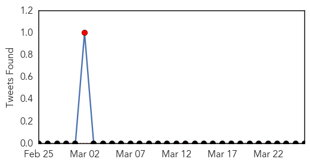
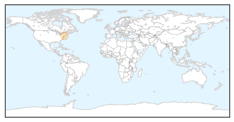

Hepatitis
30-Day Web Trend
0 alerts, 0 warnings

30-Day Twitter Trend
1 alerts, 0 warnings

Article Locations
Article Confidences
Top Articles:
- 0.812
- Indiana allows needle exchange program to stem HIV outbreak
- 0.746
- Indiana Gov. Mike Pence to declare public health emergency to deal with HIV outbreak
- 0.692
- Needle Exchange Is Allowed After H.I.V. Outbreak in an Indiana County
- 0.658
- Indiana to declare public health emergency over HIV outbreak
- 0.548
- Indiana prepares to declare public health emergency over HIV outbreak
- 0.537
- Rural Indiana county struggles as 'epicenter of the HIV outbreak'
- 0.532
- Indiana HIV outbreak: Can a needle exchange program help? (+video)
Top Tweets:
-
No tweets found for Mar 26, 2015
Pertussis
30-Day Web Trend
0 alerts, 0 warnings

30-Day Twitter Trend
2 alerts, 0 warnings

Article Locations
Article Confidences

Top Articles:
Top Tweets:
-
No tweets found for Mar 26, 2015